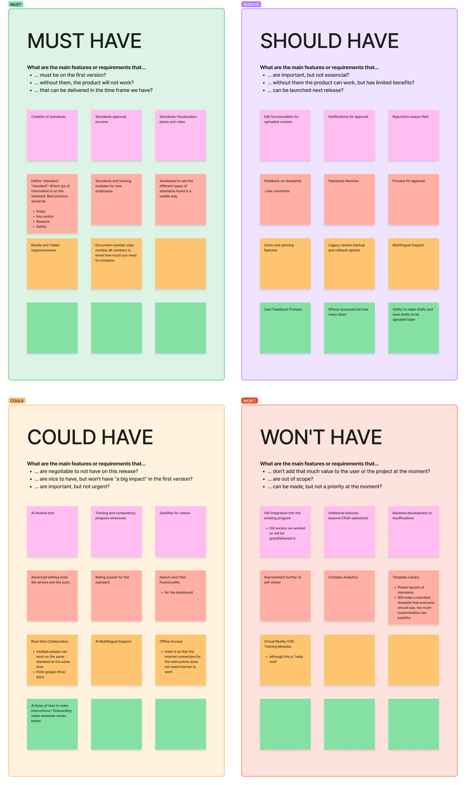
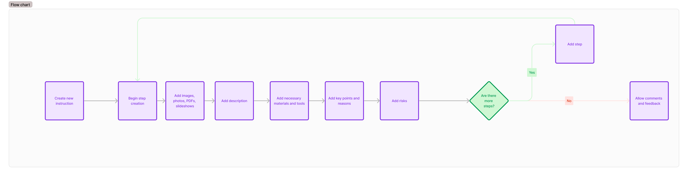
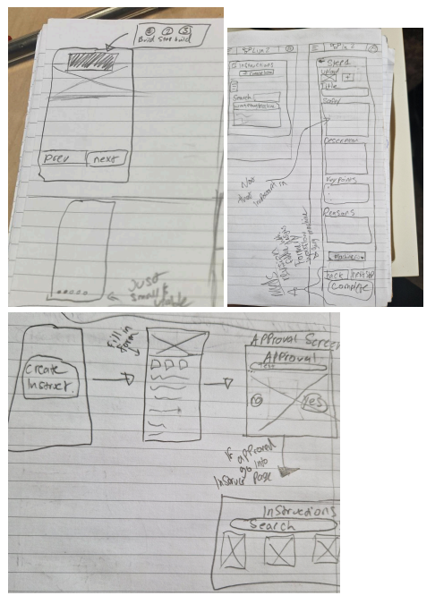
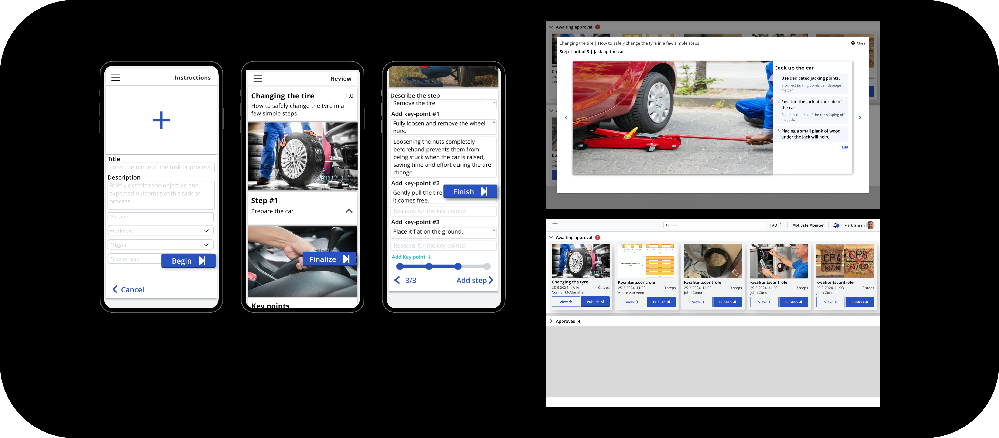

Motivate's Platform Management Tool (PMT) is designed to streamline workflow management and boost operational efficiency in manufacturing environments. The new Instruction Creation Tool (ICT) empowers managers to seamlessly create, approve, and publish standard work instructions directly within the platform.
By consolidating various documentation formats (PDFs, images, videos) into a unified platform, ICT eliminates the need for multiple external tools while ensuring strict compliance with standardization requirements. This integration significantly reduces the time spent on instruction management and minimizes the risk of errors.
The tool's development focused on creating an intuitive interface that accommodates the unique challenges of factory environments, including considerations for noise levels, lighting conditions, and the need for quick, accurate information access. Through extensive user research and iterative testing, we've delivered a solution that enhances productivity while maintaining the highest standards of quality and safety.
I studied how standard work instructions were created, reviewed, updated, and used across three manufacturing plants. Through contextual inquiries, plant observations, and interviews with operators and engineers, I looked at the practical realities behind the workflow: how people find instructions, how updates are communicated, where version confusion occurs, and what information is needed at the point of work. These findings shaped the ICT around clearer authoring, reliable approval and version control, multimedia support, and access across factory devices.
The central question was: How can the PMT platform support efficient instruction management while meeting standardization requirements?
This led to four supporting questions: how to make instruction creation intuitive, which workflow steps are essential, how factory conditions affect the interface, and what technical challenges exist in building a compliant PDF viewer.
I interviewed 12 operators and 8 engineers and observed work across 4 plant contexts. The research showed that teams struggled with scattered instructions, external files, version control, and limited mobile access. 89% wanted tablet access, reinforcing the need for a clear, integrated workflow that works at the point of production.
The findings focused the design around easier instruction management, stronger integration, and interfaces that remain readable in real factory conditions.
The research showed that the problem was not a lack of information, but a workflow that made information difficult to create, update, and access. Managers were working across scattered files while operators needed current, readable instructions at the point of work.
These findings became the basis for defining the ICT requirements and prioritizing the features that would have the greatest impact: a clear authoring flow, dependable review and approval, multimedia support, and access across factory devices.
Compiled a comprehensive list of required features based on research and user feedback. Key features include CRUD functionality for instruction management, an enhanced PDF viewer, responsive design, and seamless integration with the existing PMT platform.
Create and edit standards with multimedia uploads, video subtitles, and rich text formatting.
Support multi-level approval, automated notifications, feedback, and rejection tracking.
Provide an interactive viewer with zoom, pan, dashboards, and filtering.
Capture ratings, comments, revisions, change tracking, and photo or video issue reports.
Connect training modules, completion tracking, competency records, and certification.
Applied the MOSCOW method to prioritize features based on their importance and implementation feasibility. This systematic approach helped focus development efforts on critical functionality while establishing a clear roadmap for future enhancements to the instruction management system.

The requirements phase translated research into a focused product direction: a clear authoring flow, multimedia support, approval controls, and a reliable way to view standards across devices.
The MoSCoW prioritization also protected the core workflow from feature creep. With the scope defined, I could move into prototyping and test whether the proposed sequence made sense to the people expected to use it.
I translated the requirements into a complete instruction-creation workflow based on Training Within Industry methodology. The flow covered the practical sequence from creating a standard and documenting the work to adding media, reviewing content, submitting it for approval, and making the approved version available to factory teams. Structuring the process this way kept the experience aligned with how standards are actually created and used, rather than treating each screen as an isolated feature.

I began with low-fidelity sketches to test the structure before investing in visual polish or implementation. The wireframes focused on the order of steps, the information required at each stage, and how users would move between authoring, review, approval, and viewing. These early prototypes made it easier to discuss the workflow with stakeholders, identify unnecessary complexity, and refine the direction before developing the higher-fidelity screens.

I translated the tested workflow into a Vue 3 front-end within the existing PMT platform. The implementation connected standard creation, multimedia content, approval, document viewing, and responsive access across factory devices.
The work focused on turning the validated sequence into a dependable product flow. Managers can begin a standard, add the information and media needed to explain the work, review it before submission, and move it through an approval process. Approved standards can then be viewed from the devices used by factory teams.
I also worked with PDF.js and the existing PMT structure to keep document handling inside the platform rather than sending users back to external tools. The implementation had to balance a richer content workflow with the practical needs of shop-floor use: fast access, clear status, readable layouts, and support for different screen sizes.
The final result is a functional foundation rather than a disconnected visual prototype. It supports the core CRUD and approval workflow while leaving a clear path for future work such as stronger low-connectivity support, richer editing, analytics, and further validation with factory users.
Before building the complete Instruction Creation Tool, I created a working PDF viewer as an initial implementation test. This helped me learn how the existing platform handled documents, rendering, controls, and responsive behavior before committing to the larger authoring and approval workflow.
The prototype gave me a practical way to test the technical direction early. It also clarified how documents could be viewed inside PMT instead of sending factory users to separate tools, which became an important part of the final product direction.
Short demonstration of the initial PDF viewer prototype working inside the implementation process.

Testing the early workflow clarified how the instruction should be created, reviewed, approved, and consumed on the factory floor. The low-fidelity work made structural problems visible before implementation, while the final screen flow showed how the pieces could work together.
The validated direction gave implementation a concrete foundation: the next step was no longer to decide what the workflow should be, but to make it reliable, maintainable, and usable inside the existing PMT platform.
The implementation connected the validated workflow to a working PMT experience. The project moved from a scattered document problem to a structured system for creating, reviewing, approving, publishing, and viewing standards.
It established a stronger foundation for managing work instructions while making the next opportunities explicit: better offline and low-connectivity behavior, richer content editing, analytics, and continued testing with the people who use the platform in production.